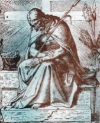

Tajemnica Szczęścia
Piętnaście modlitw św. Brygidy
do naszego
Boskiego Zbawiciela i wspaniałe obietnice.
do naszego
Boskiego Zbawiciela i wspaniałe obietnice.

"Tajemnica Szczęscia"
jest zbiorkiem rozważań i modlitw,
opartym na krótkim tekście
"Piętnaście modlitw"
które po uzyskaniu aprobaty kościelnej wydała
Casa di Padre Pio, Case postale 231,
Saint-Remi,Que., Canada.
Za pozwoleniem Kurii Metropolitalnej
Warszawskiej z dnia 12.III.1984 r. nr 1625/K/84.
jest zbiorkiem rozważań i modlitw,
opartym na krótkim tekście
"Piętnaście modlitw"
które po uzyskaniu aprobaty kościelnej wydała
Casa di Padre Pio, Case postale 231,
Saint-Remi,Que., Canada.
Za pozwoleniem Kurii Metropolitalnej
Warszawskiej z dnia 12.III.1984 r. nr 1625/K/84.